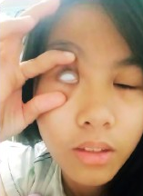

“To the teacher who made learning an adventure and kindness a lesson, my heartfelt gratitude. You’ve left an indelible mark on my heart.”
A mind’s brilliance is the star that guides, yet it’s the heart’s humility that turns the sky into a canvas, allowing the light to dance with the constellations in a celestial ballet of wisdom and grace.
| ⋆˚࿔ Pages 𝜗𝜚˚⋆ | ⋆˚࿔ Main 𝜗𝜚˚⋆ |
|---|---|
| ᡣ • . • 𐭩 ♡1 | 𖹭 Archives 𖹭 |
| ᡣ • . • 𐭩 ♡2 | 𖹭 About 𖹭 |
| ᡣ • . • 𐭩 ♡3 | 𖹭 Film 𖹭 |
| ᡣ • . • 𐭩 ♡4 | 𖹭 Record 𖹭 |
For me, School isn’t just about textbooks and exams; it’s a vibrant tapestry of experiences that shape us. From the first day I stepped into the classroom, I embarked on a journey filled with laughter, challenges, and unexpected discoveries.
Remember that mix of excitement and nervousness? The unfamiliar faces, the scent of freshly sharpened pencils, and the echo of lockers closing – it all felt like stepping into a new universe. But as the days unfolded, I found my rhythm. I navigated hallways, deciphered class schedules, and learned to balance textbooks on one arm while juggling notebooks. Each moment etched itself into my memory – from the thrill of acing a quiz to the camaraderie during recess games.
School introduced me to a diverse cast of characters. There was the quiet bookworm who always sat in the corner, lost in fictional worlds. The class clown who could turn a dull math lesson into a comedy show. The artist who doodled intricate patterns on notebook margins. And the selfitis whose hands seemed to have wings during picture taking. We laughed together, shared secrets, and formed bonds that transcended mere proximity. These classmates became my allies, my confidantes, and can be my lifelong friends.
Ah, the teachers – the unsung heroes who shaped my mind. Their passion ignited curiosity within me. Whether it was Sir Calimbas' animated history lessons or Ms. D's chemistry teaching skills that were fun, they left an indelible mark. Beyond textbooks, they taught me life skills – resilience, empathy, and the art of asking questions. And those “aha” moments when a complex concept finally clicked? Priceless.